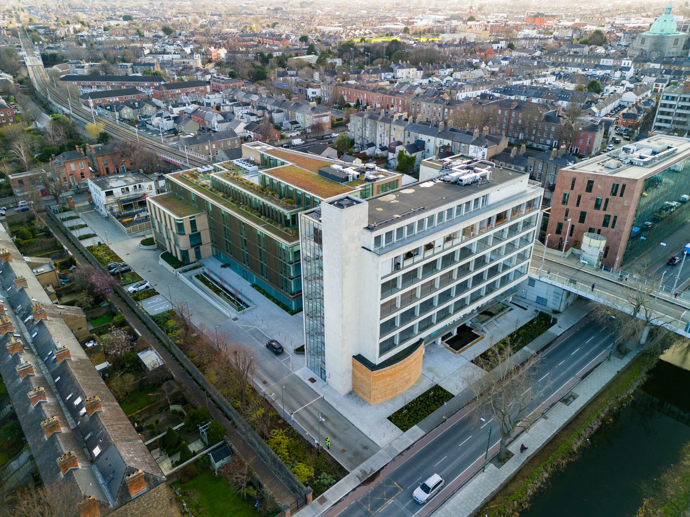

Strengthening an existing structure
Existing concrete and steel elements were assessed, repaired and upgraded to support contemporary office use while retaining the building's heritage.
29 October 2026
Preserving Dublin's architectural heritage while engineering a more sustainable future.

Two Grand Parade is a 9,600 m² commercial development for Hines, combining six storeys of new office space above a single-level basement with the refurbishment of the protected former PJ Carrolls headquarters.
A glass atrium connects the new steel-framed building with the existing 1960s structure overlooking the Grand Canal and Charlemont Luas stop. Rather than demolish and rebuild, the project team extended the life of the existing building, avoiding substantial embodied carbon emissions.
Existing concrete and steel elements were assessed, repaired and upgraded to support contemporary office use while retaining the building's heritage.
A 2.4 m reinforced concrete slab spanning 22 m was incorporated to allow for a potential future underground station beneath the development.
Complex basement works beside the elevated Charlemont Luas embankment required careful ground support and monitoring while the tram service remained operational.
The refurbishment preserved a significant existing structure, reducing the need for new materials and retaining the character of a recognisable Dublin landmark.
The development achieved LEED Platinum certification. Green roofs help manage stormwater runoff, while its location beside the Luas and other public transport options supports more sustainable travel.
The new steel frame uses castellated beams to support efficient material use and integration of building services.